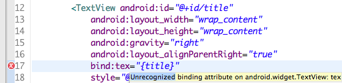

The RoboBinding Validator plugin is a tool for validating the binding attributes in your layout xml. It is currently available as a Maven plugin but should integrate well with M2Eclipse.
To get started, add the following plugin declaration to your POM:
{% highlight xml %}Although this should be rectified from M2Eclipse 1.1 onwards, when using M2Eclipse 1.0 you will see the warning "Plugin execution not covered by lifecycle configuration". Ignore this and click the popup option to "Permanently mark goal validate-bindings in pom.xml as ignored in Eclipse build".
Unfortunately, this will add an ugly lifecycle-mapping section to your POM, that looks something like this:
{% highlight xml %}To get the plugin working, remove the ignore tags from inside the action block, and replace them with execute tags instead. You should now be good to go.